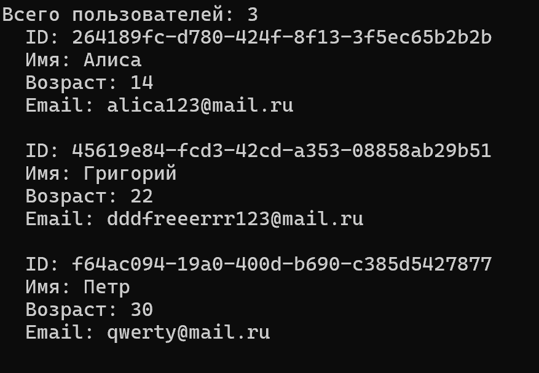

О чём этот проект
Проект посвящён созданию файловой базы данных на языке C#. В отличие от традиционных СУБД (SQL Server, PostgreSQL, SQLite), здесь данные хранятся в виде отдельных JSON-файлов, сгруппированных по папкам-таблицам. Это позволяет понять, как устроены базы данных изнутри, без использования готовых решений.
Проект выполнен в рамках проектной практики первого курса. Основная цель — получить практические навыки работы с языком C#, файловой системой, сериализацией данных, а также освоить инструменты разработчика: Git, Markdown, HTML и CSS.
Ключевые возможности
- Хранение любых объектов, реализующих интерфейс
IEntity - Автоматическая генерация уникальных идентификаторов (GUID)
- Полный набор CRUD-операций: создание, чтение, обновление, удаление
- Поиск записей по произвольному условию через предикаты
- Консольное приложение с интерактивным меню для демонстрации
Главное меню программы
